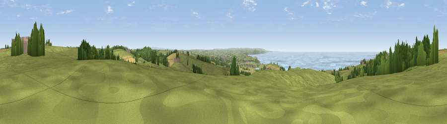

Viewpoint near Poughill
#3467 in England · top 13% of its area beats it · near Poughill · path 283 mWhere it is
The exact computed spot (SS 22025 09962). Click the marker for map links.
Public access: the nearest public right of way is about 283 m away — the final stretch may cross private land. Computed from Natural England's CRoW access layer and OpenStreetMap rights of way — not the legal definitive map. Always verify locally.
The view, rendered

A 360° render of this exact spot computed from the terrain model, tree cover and land cover — summer colours, afternoon light, calibrated against photographs of famous viewpoints. Real trees, hedges and buildings will differ in detail.
The panorama
Grey silhouette: terrain skyline in each direction (720 bearings, Earth curvature and refraction included). Dashed green: skyline with trees (+15 m) and buildings (+8 m) as obstacles. Blue strip: how far the ground is visible on each bearing.
Where the view opens
Wedge length = distance to the farthest visible ground on that bearing (vegetation-aware). Rings at 10, 25 and 50 km.
What fills the view
58% grassland · 21% water · 9% cropland · 9% woodland · 3% built-up
Angular shares of the visible panorama (visual magnitude), not map area. Landscape diversity 0.51 (0–1 Shannon).
Key numbers
More beautiful places nearby
The staircase of upgrades: each row has a higher view potential than everything closer. Driving times are estimates from straight-line distance, calibrated against real road routing — check an actual route before setting out.
| Place | Direction | Drive | Score |
|---|---|---|---|
| Viewpoint near Poughill | WSW · 0 km | ~2 min | 74.0 |
| Viewpoint near Morwenstow | NW · 3 km | ~7 min | 74.5 |
| Viewpoint near Morwenstow | NNW · 4 km | ~10 min | 75.4 |
| Viewpoint near Morwenstow | NNW · 4 km | ~10 min | 77.9 |
| Embury Beacon | N · 10 km | ~19 min | 83.8 |
| Viewpoint near Crackington Haven | SSW · 18 km | ~31 min | 88.1 |
| Viewpoint near Combe Martin | NE · 53 km | ~75 min | 88.9 |
| Holdstone Hill | NE · 55 km | ~77 min | 90.2 |
50.86171, -4.53031 · source: screening · position refined by local search. Computed location — check access rights before visiting.